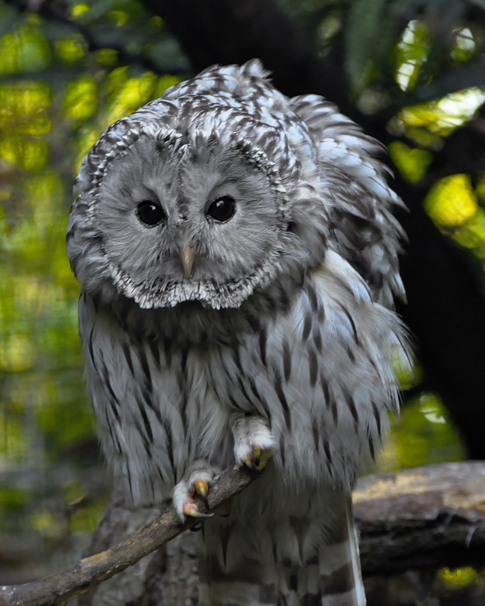
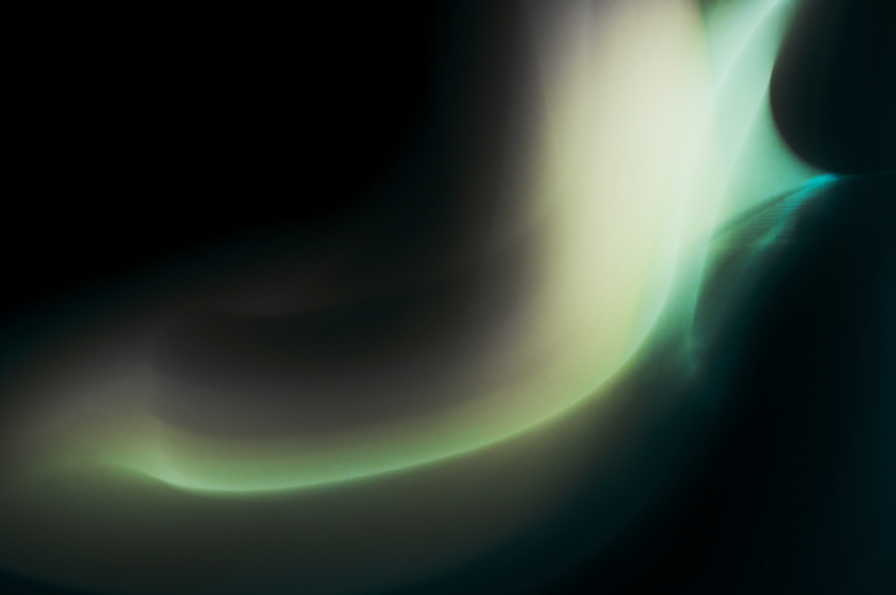

01Web experiments
HTML / CSS / 2026
Pietro Giudici / DEVELOPER

Pavia / Personal archive01 / Profilo
Sono Pietro, uno studente curioso che ama capire come funzionano le cose e trasformare le idee in qualcosa di visibile.
Frequento il Liceo Scientifico Teresio Olivelli di Pavia. Mi muovo tra HTML, CSS e Python; nel tempo libero fotografo, monto video e cerco sempre un modo nuovo per imparare.
02 / Currently
Settembre 2026 / Pavia
Sto imparando a dare una forma più precisa alle idee, senza perdere la curiosità del primo tentativo.
03 / Selected work
04 / Media lab
Metti foto e video dentro assets/media/: dopo il push, il sito li indicizza e li mostra automaticamente qui.
Sto cercando i tuoi media...
Per cambiare nome e descrizione modifica assets/media/catalog.json, poi fai push.
05 / Il mio setup